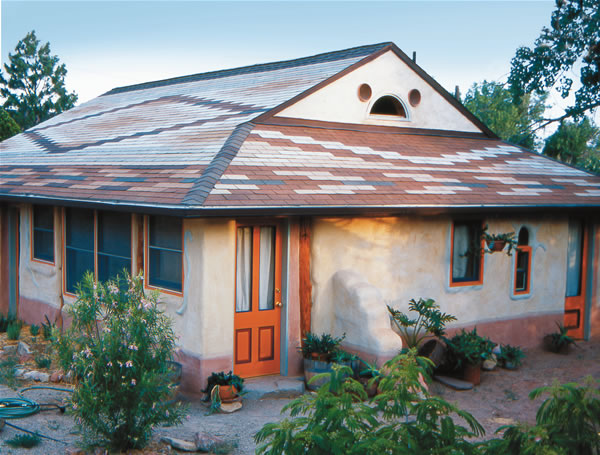
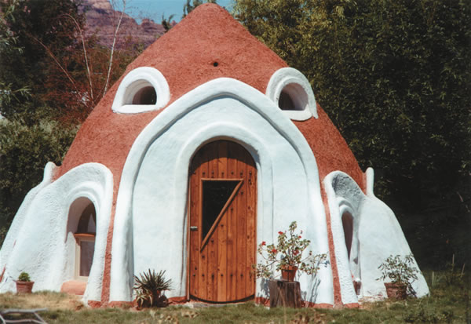
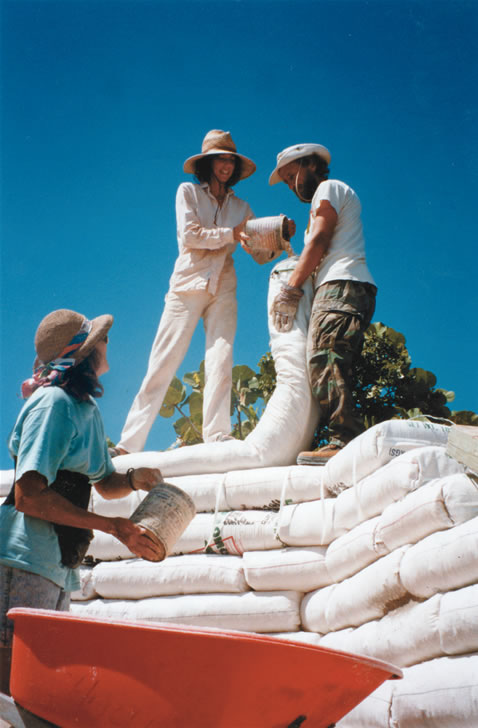
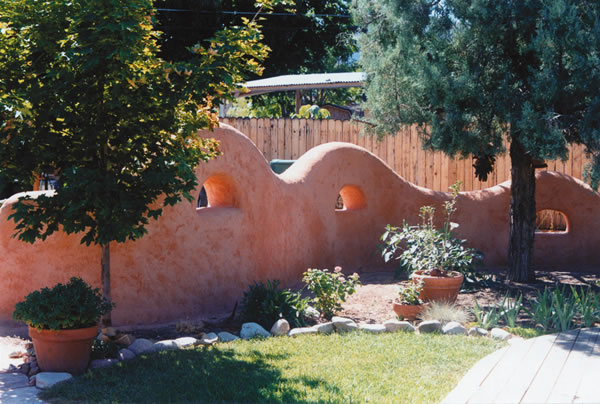

Earthbag Construction
Make durable buildings from the dirt in your yard.
By Kaki Hunter and Donald Kiffmeyer
October/November 2005
You can build a magnificent shelter with a couple of rolls of barbed wire, a bale of bags, a shovel and nothing more than the earth beneath your feet. This is the premise that inspired the imagination of visionary architect Nader Khalili when he conceived the idea of “sandbag architecture.” In his quest to seek solutions to social dilemmas such as affordable housing and environmental degradation, Khalili drew on his skills as a contemporary architect while exercising the ingenuity of his native cultural heritage; earthen architecture is common in his homeland, Iran, and throughout the Middle East, Africa, Asia, Europe and the Mediterranean.
According to many building professionals and environmental groups, earthen buildings currently house more than one-third of the world’s population. Thousands of years ago, people discovered and utilized the principles of arch and dome construction. By applying this ancient structural technology, combined with a few modern-day materials, Khalili has cultivated a dynamic, contemporary form of earthen architecture that we simply call “earthbag building.” He teaches this technique at the California Institute of Earth Art and Architecture in Hesperia.
SIMPLICITY AND BEAUTY
Earthbag construction uses earth as the primary structural element, and it helps create curvaceous, sensual architecture while providing structural integrity. Earthbag structures can be monolithic, meaning that an entire structure is built from foundation to walls to roof using the same materials and methods throughout. Corbelled earthbag domes (bags laid horizontally and stair-stepped up to form the dome) foster simplicity and beauty. Earthbag domes designed with arch openings can eliminate 95 percent of the lumber used to build the average stick-frame house. (See the Honey House photo in the image gallery.)
Earthbag building utilizes the ancient technique of rammed earth in conjunction with modern woven polypropylene bags as a flexible form. The basic procedure is simple:
• Fill the bags using suitable pre-moistened earth.
• Close, fold and pin the bags to make neat square-cornered rectangles similar to grocery-store brown bags.
• Lay the finished bags in a masonry-style running bond.
• Thoroughly compact with hand tampers after a row has been laid.
• Lay two strands of four-point barbed wire, pushed down with bricks, between every row. This acts as a “Velcro mortar,” cinching the bags in place and providing exceptional tensile strength (resistance to lengthwise stress) while allowing the rows to be stepped, creating domes and other unusual shapes.
• Apply exterior and interior plasters.
Earthbag walls can be linear, free-form or a perfect circle formed by the use of an architectural compass. Arched windows and doorways are built around temporary arch forms until the keystone bags are tamped into place. The finished walls then cure to durable, cementlike hardness.
Earthbag construction helps avoid wood consumption for the walls, and it also can eliminate wood for the roof frame where corbelled domes are utilized. Conventional wood roof systems consume a lot of trees. This may be sustainable for those who dwell in forested areas, but for people living in relatively treeless areas, designing corbelled earthbag domes offers an opportunity to create shelter using the Earth’s most abundant natural resource-earth itself. Why cut and haul lumber when the most common, versatile, energy-efficient, cost-effective and termite-, rot- and fire-proof construction material is available right at home
EARTHBAG STRENGTHS
Another advantage of earthbags is the tensile strength inherent in the woven-poly bags when combined with the use of four-point barbed wire. It’s sort of a double-whammy of tensile vigor not found in most other forms of earth construction. Rammed earth and even concrete need reinforcing rods to keep them from pulling apart when placed under opposing stresses. The combination of a textile casing and barbed wire builds this tensile strength into every row of an earthbag structure.
In order to use some forms of earth construction in humid environments, a percentage of cement, lime or asphalt emulsion must be added to chemically alter the composition of the earth, making it resistant to water absorption. Earthbags, on the other hand, can effectively utilize raw earth for the majority of the walls, even below ground, because the bags provide mechanical rather than chemical stabilization. The textile bag supports the raw earth even when fully saturated. This means builders can use a wider range of soil options, extending earth construction into nontraditional earth-building regions such as the Bahamas, the South Pacific and a good portion of North America.
Khalili has demonstrated the structural integrity of his raw earth (nonchemically stabilized) earthbag domes. Under static testing conditions simulating seismic, wind and snow loads, the tests surpassed 1991 Uniform Building Code requirements by 200 percent. These tests were done at the California Institute of Earth Art and Architecture (www.calearth.org) under the supervision of the International Conference of Building Officials. The earthbag system has been proven to withstand the ravages of fire, flooding, hurricanes, termites and two earthquakes with magnitudes of more than 6 and 7.
Earthen walls function as an absorbent mass able to store warmth and re-radiate it back into the living space as the mass cools. This temperature fluctuation is known as the “thermal flywheel effect.” The effect of the flywheel is a 12-hour delay in energy transfer from exterior to interior. This means that at the hottest time of the day, the inside of an earthbag structure is at its coolest, while at the coolest time of the day, the interior is at its warmest. This delay is possible only in walls greater than 12 inches thick and can be modified by climate, house orientation, wall color and the placement of windows and doors.
EARTHBAG COSTS AND LIFE CYCLE
In most cases, materials for earthbag construction are inexpensive, abundant and accessible. Grain bags and barbed wire are readily available throughout most of the world for a fraction of the cost of cement, steel and lumber. Dirt can be harvested on site or trucked in for the cost of transportation. Developed countries have the advantage of gravel yards that produce vast quantities of “reject fines” as a byproduct of road building.
Earthbag construction, like straw bale and other earth-building methods, is labor-intensive, and that is where the majority of the “cost” is incurred. The Honey House cost about $1,500 to build. The owners paid to have the dirt and bags delivered to the site. All of the construction was done by the owners and their friends over one summer. Beyond the $1,500 for the building shell, the owners also paid for foundation, plumbing and electrical work.
The simplicity of the earthbag technique lends itself to owner/builder and “sweat-equity” housing endeavors and disaster relief efforts. Properly designed corbelled earthbag domes excel in structural resilience in the face of the most challenging natural disasters. Does it really make sense to replace a tornado-ravaged tract house with another tract house An earthbag dome provides more security than most homeowner insurance policies could offer by building a house that is resistant to fire, rot, termites, earthquakes, hurricanes and flood conditions.
Earthen architecture endures. If we can build one ecologically friendly house in our lifetime that is habitable for 500 years, we will have contributed to a sustainable society.
Adapted from Earthbag Building, a Mother Earth News “Book for Wiser Living,” by New Society Publishers. Authors Kaki Hunter and Donald Kiffmeyer have been involved in the natural building movement for 12 years and specialize in environmentally friendly and affordable building methods. To order, see Page 126 or go to www.MotherEarthShopping.com.
You can share your earth-building experiences by going to our new Green Homes and Renewable Energy Directory at www.MotherEarthForums.com/greenhomes.
Advantages of Earthbag Building
We love earthen construction in all its forms. The sheer joy of mixing and plopping cob into a sculptural masterpiece is unequaled. But for the first-time owner/builder, there are some distinct advantages to earthbag construction. Here are the advantages we think it gives to the do-it-yourselfer as compared to other types of earth building.
Adobe is one of the oldest-known forms of earthen building. It is probably one of the best examples of the durability and longevity of earthen construction.
Adobe is made using a clay-rich mixture with enough sand to provide compressive strength and reduce cracking. The mix is liquid enough to be poured into forms and then left until it’s firm enough to be removed from the forms to dry in the sun. Adobe bricks cannot be used for wall building until they have completely cured. While this is probably the least expensive form of earthen building, it takes more time and effort. Earthbag building, on the other hand, does not require as much time and attention as adobe. Because the bags act as a form, the dirt mix is put directly into the bags and immediately placed on the walls. They also don’t need as much moisture as adobe - earthbags cure in place on the wall, eliminating the time spent waiting for the individual adobe bricks to dry.
Rammed earth is another form of earth building that has been around for centuries and is used worldwide. Many miles of the Great Wall of China were made using rammed earth.
Rammed earth involves the construction of temporary forms into which earth is compacted. These forms must be built strong enough to resist the pressure exerted on them from ramming (compacting) the earth into them. The soil also must be a specific ratio of clay to sand with about 10-percent moisture by weight added to the mix.
In most modern rammed-earth construction, a percentage of cement or asphalt emulsion is added to the earthen mix to help stabilize it, increasing cohesion and compressive strength and decreasing the chance of erosion once the rammed-earth wall is exposed.
Earthbags act as the form for the earth, and because they stay within the walls, earthbag construction eliminates the need for heavy-duty wood and steel forms that are not user-friendly for the first-time owner/builder.
Cob is the traditional English term for a style of earth building. It is particularly useful in wet climates where the drying of adobe is difficult. England and Wales have cob structures that have been in use for nearly five centuries.
Cob uses a combination of clay, sand, straw and water to create stiff bread-loaf-shaped “cobs” that are plopped in place on the wall and “knitted” into each other to create a consolidated mass. Like earthbags, cob can be formed into curvilinear shapes. Unlike earthbags, cob requires the use of straw. The straw works for cob in the same way that steel reinforcement does for concrete.
While the tensile strength of earthbags creates a sturdy “brick,” cob requires a certain amount of time to set up before it can be built upon. As a cob wall grows in height, the weight of the overlying cobs can deform the lower courses of cob if they are still wet. The amount of cob that can be built up in one session without deforming is known as a “lift.” Each lift must be allowed time to dry a little before the next lift is added to avoid this bulging deformation.
Pressed block is a relatively recent type of earthen construction. It is essentially the marriage of adobe and rammed earth. Using an optimum rammed-earth mix of clay and sand, the moistened soil is compressed into a brick shape by a machine that can be either manual or automated.
The main advantage of earthbag building over pressed-block construction is the same as that over all other earth-building forms - earthbags do not require a specific soil mixture to work properly. Adobe, rammed earth, cob and pressed block rely on a prescribed ratio of clay and sand; or clay, sand and straw.
-Kaki Hunter and Donald Kiffmeyer
|
 OK OK OK Productions (2) Above and opposite page: This cement-block frame,earthbag-infill house was the first of its kind in Utah to receive a building permit. |
 OK OK OK Productions The Honey House, built by the authors, is a prime example of Iranian architect Nader Khalili’s corbelled dome, monolithic design. |
 OK OK OK Productions (2) Co-author Kaki Hunter (center) fills a continuous earthbag tube right on the wall to minimize carrying and lifting. |
|
 This undulating wall shows the results of the earthbag technique used to create a utilitarian yet artful structure. |
 |
|